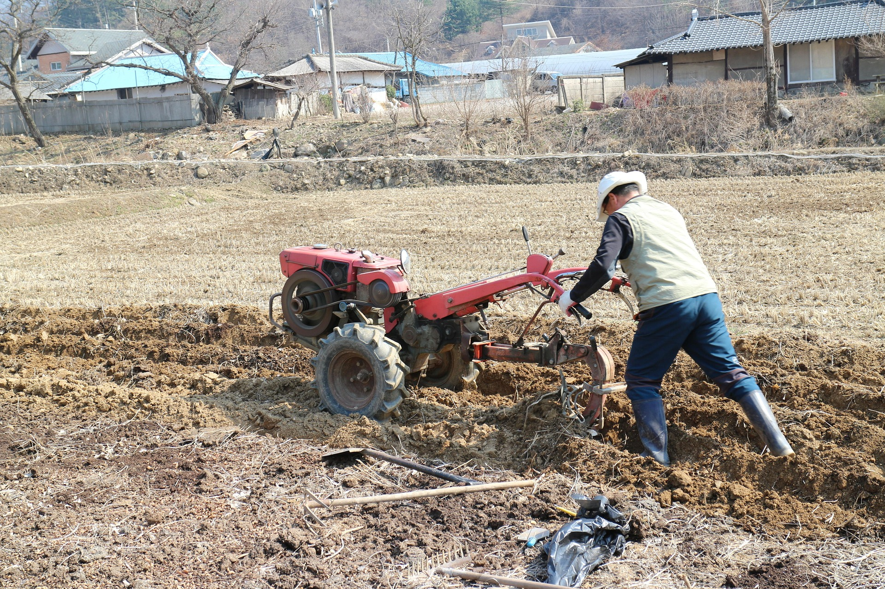

Macchine agricole
Vendita e manutenzione di macchine agricole, con assistenza qualificata.
Vendita e Assistenza
Da anni al servizio di professionisti e privati con competenza, ricambi e supporto rapido su macchine agricole, attrezzature da giardino.

Vendita e manutenzione di macchine agricole, con assistenza qualificata.

Soluzioni per la cura del verde: vendita, interventi tecnici e ricambi.
Concimi, fertilizzanti, accessori e forniture selezionate per professionisti e appassionati.
Puoi trovare da noi anche articoli per il vigneto e un'ampia disponibilita di pezzi di ricambio per manutenzione e riparazioni.
 BCS
Macchine agricole e attrezzature professionali
Husqvarna
Soluzioni per giardino, forestale e cura del verde
Eurosystems
Attrezzature per giardinaggio e piccola agricoltura
BCS
Macchine agricole e attrezzature professionali
Husqvarna
Soluzioni per giardino, forestale e cura del verde
Eurosystems
Attrezzature per giardinaggio e piccola agricoltura
GALOTTA SILVIO (DITTA INDIVIDUALE) opera a Pietragalla offrendo un servizio affidabile e orientato alle esigenze del territorio.
Competenza tecnica, attenzione al cliente e disponibilita di prodotti e ricambi sono i valori che guidano ogni intervento.
| Denominazione | Ditta Galotta Silvio |
|---|---|
| Indirizzo |
V.le Gen C. A. Dalla Chiesa, 118 85016 Pietragalla (PZ) |
| P. IVA | IT 01390810768 |
| Codice Fiscale | GLTSLV73B24G812P |
| silviogalotta@libero.it | |
| PEC | silviogalotta@pec.it |
V.le Gen C. A. Dalla Chiesa, 118
85016 Pietragalla (PZ)